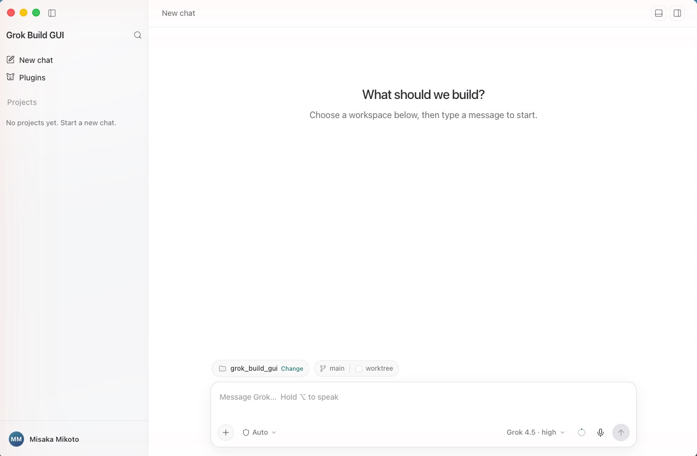
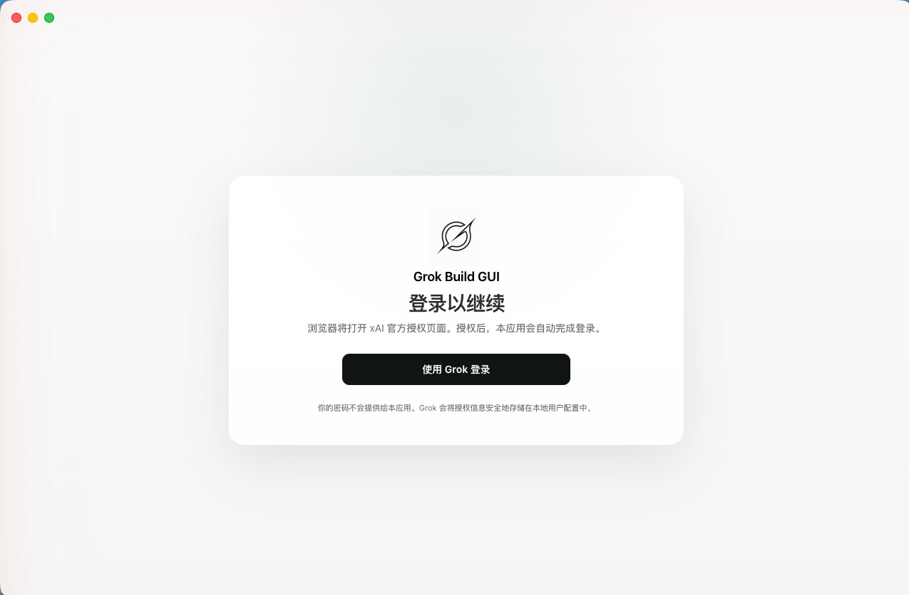

A desktop GUI for the Grok Build CLI
Grok Build ships as a terminal agent. Grok Build GUI puts a real desktop interface in front of it — a session sidebar, a streaming transcript with tool cards, a permission modal, an embedded browser the agent can drive, a terminal and a file tree — without reimplementing the agent itself.

A client, not a second agent
The app restores a pinned, integrity-checked grok executable, spawns
grok agent stdio, and drives every session over the
Agent Client Protocol. The agent stays
the single source of truth for sessions, tools and loops; the GUI owns presentation,
local OS capabilities, and the human-approval surface that ACP asks for.
Features
Everything the terminal gives you, plus the things a terminal cannot.
Streaming transcript
Per-turn navigation, a turn rail, and rewind-to-here. Markdown with syntax highlighting, inline image attachments and a lightbox.
Tool cards and diffs
Every tool call expands into arguments, results and unified diffs, with a file-change bar summarising what a turn touched.
Permission modal
Implements the ACP request_permission reverse-request: the agent
asks, you allow or deny, per call — from ask-for-approval through full access.
Browser the agent can drive
A webview pane exposed to the agent as an MCP tool server. You watch every action; password fields always stop for explicit approval and are redacted.
Terminal and file tree
Real PTY sessions (node-pty + xterm.js) with a configurable shell, plus a file tree and viewer with reveal-in-Finder and open-with.
Git worktree isolation
Start a chat on its own worktree from any branch, so the agent's edits never touch your working copy. The app tracks status and cleans up.
Screen capture and voice
Full screen, window or drag-selected region straight into the composer as an attachment, plus push-to-talk speech-to-text.
Prompt queue and context meter
Keep typing while a turn runs and queue follow-ups. The context meter breaks the window into cached prefix, new input, reply, thinking tokens and free space.
Sessions and workspaces
Sessions grouped by project, searchable, renameable and resumable, with history streamed back in on load, and a workspace picker with recent projects.
Account and plugins
Grok sign-in via the CLI's OAuth flow with usage and quota display, plus plugin install, enable, disable and uninstall.
English and 简体中文
Interface language follows the system or can be set explicitly.
Auto-update
Opt-in per build, from GitHub Releases or any static feed. System proxy detection, persisted window state and a native app menu.

Architecture
- Renderer → main. The renderer holds no privileged handles.
Agent prompts, terminal bytes, file reads and screen capture all cross a
contextBridgepreload surface into the main process. - Main → agent. The main process spawns the pinned
grok agent stdioand speaks ACP over its stdio pipes. Session state, tool execution and goal loops live in the agent. - Agent → browser. A loopback HTTP bridge on a random port with a
random 32-byte bearer token backs an MCP server descriptor handed to the agent. The
agent's MCP child forwards
browser_*calls back over that authenticated bridge, which drives the webview you are watching. The agent never touches the renderer directly. - Two safety layers. App permissions (ACP
request_permission→ the GUI modal) are what this app implements. The optional OS sandbox (Seatbelt/Landlock) is enforced by the agent and fails hard withEPERM.
Install and run
Requires Node.js 22.12+. Prebuilt installers are on the releases page; to run from source:
macOS
git clone https://github.com/msk-labs/grok-build-gui.git
cd grok-build-gui
./bootstrap --startWindows
git clone https://github.com/msk-labs/grok-build-gui.git
cd grok-build-gui
.\bootstrap.cmd --startbootstrap installs the locked npm dependencies and restores the exact
runtime versions declared in config/runtime/. Downloaded runtime files
land under thirdparty/ and are never committed.
FAQ
Does Grok Build have a GUI?
Grok Build ships as a terminal agent, so there is no official desktop GUI from xAI. Grok Build GUI is a third-party, open-source desktop client that drives the same CLI over ACP.
Is this a fork of the agent?
No. It is a client. It spawns the official pinned grok executable and
talks to it over stdio; the agent keeps owning sessions, tools and loops.
Which platforms are supported?
macOS on Apple Silicon and Windows 10/11 on x64 or ARM64. Linux identifiers are reserved in the runtime manifest but remain unsupported until pinned artifact URLs, sizes and SHA-256 values are added and verified.
Is it free?
Yes. The GUI is MIT-licensed. The bundled Grok Build artifact is Apache-2.0 and ships with its upstream and third-party notices; Open Computer Use 0.2.1 is MIT-licensed.
How does it keep the agent from doing something unwanted?
Every tool call the agent flags goes through the ACP permission request, which surfaces as a modal you allow or deny per call. Password fields in the embedded browser always stop for approval, and the secret is redacted before the permission payload is shown or logged.